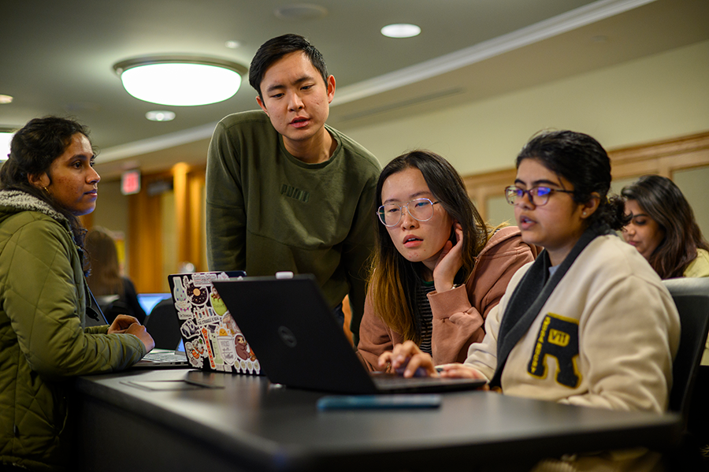

Tutoring Sites
Tutoring Through UMSI
The UMSI Academic Success Team provides peer tutoring for UMSI students, including support for programming and math courses. Peer tutoring is available for courses like SI 106, SI 206, SI 506, SI 507, and general Python. Math tutoring covers areas like linear algebra, statistics, and general math. You can find additional resources and access a Peer-to-Peer Tutor Directory. For more details, you can reach out to umsi.academicsuccess@umich.edu
Booking With Peer Tutors
UMSI offers peer tutoring by experienced students knowledgeable in specific programming and math subjects. Each tutor has a unique approach to teaching, providing you with the flexibility to choose a tutor based on your individual learning style. You can select their availability to sign up for sessions with your preferred tutor on any given day.
For more information and to sign up for tutoring, visit the UMSI Tutoring page